10 部片单 · 恐怖 / 科幻 / 惊悚 / 悬疑 / 剧情
| # | 片名 | 类型 | 评分 / 状态 |
|---|---|---|---|
| 01 | 不要抬头 | 科幻 / 喜剧 / 剧情（美国 · 一颗彗星正在飞来，没有人愿意抬头） | 7.6 / 56% / 49 |
| 02 | 隐入尘烟 | 剧情 / 爱情（中国 · 甘肃高台 · 两个被生活剩下的人） | 8.4 / 96% / 79 |
| 03 | 伊尼舍林的报丧女妖 | 黑色喜剧 / 剧情（爱尔兰 · 一个男人决定不再和好朋友说话） | 7.9 / 96% / 87 |
| 04 | 怪物 | 剧情 / 悬疑（日本 · 一桩校园冲突的三个版本） | 8.6 / 97% / 79 |
| 05 | 花月杀手 | 悬疑 / 惊悚 / 剧情 / 犯罪（美国 · 石油、印第安人与一桩谋杀案） | 7.2 / 93% / 89 |
| 06 | 河边的错误 | 悬疑 / 惊悚 / 剧情（中国 · 1995 年江南小镇的一桩河边凶案） | 7.2 / 85% / 6.6 |
| 07 | 姥姥的外孙 | 剧情 / 家庭（泰国 · 一个全职孙子的继承之战） | 8.8 / 98% / 74 |
| 08 | 阿诺拉 | 剧情 / 喜剧 / 爱情（美国 · 布鲁克林的一场闪婚） | 6.3 / 93% / 91 |
| 09 | 真正的痛苦 | 剧情 / 喜剧（波兰 / 美国 · 两个堂兄弟的创伤之旅） | 7.8 / 96% / 85 |
| 10 | 粗野派 | 剧情 / 传记（美国 / 英国 / 匈牙利 · 一个建筑师的美国梦） | 7.2 / 93% / 90 |
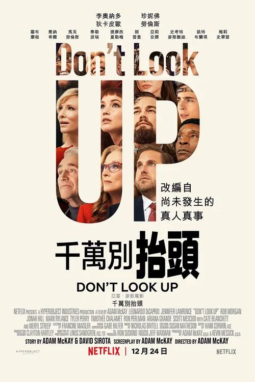
不要抬头 Don't Look Up
「「有一颗彗星六个月后撞上地球——现在，谁先去投票？」」
剧情梗概
密歇根州立大学天文学博士生凯特·迪比亚斯基在观测数据里发现了一颗新彗星，导师兰道尔·明迪博士核算轨道后脸色发白：直径五到十公里，大约六个月后撞上智利近海，足以让地球生命重来一遍。NASA 的泰迪证实了计算，三人飞往华盛顿，而白宫把这桩灭绝危机排到了中期选举之后。走投无路的两人登上全国最火的晨间节目《每日猛料》，想直接警告公众——主持人不当回事，凯特当场崩溃，片段被做成表情包，明迪反而因为外形走了红。最后接住这颗彗星的是手机巨头 BASH 的掌门人伊舍威尔：他提议把彗星炸碎、开采稀土，而总统拍板支持他的方案。至于方案的可靠性，以及六个月后那个确定的夜晚，已经没有人再有兴趣抬头看了。
亮点
- 亚当·麦凯执导，与记者大卫·西罗塔共同构思——从《大空头》的金融灾难到本片的星球灾难，他拍的其实是同一件事：真相如何被当成一个可以公关的麻烦。
- 莱昂纳多·迪卡普里奥、詹妮弗·劳伦斯、梅丽尔·斯特里普、凯特·布兰切特、乔纳·希尔、马克·里朗斯、蒂莫西·查拉梅、爱莉安娜·格兰德——一张几乎把好莱坞半壁搬来的卡司表，连客串都是朗·普尔曼和基德·库迪。
- 上线首周观看时长约 1.52 亿小时，创下当时 Netflix 电影的开播纪录；约 7500 万美元的预算，也是当年网飞投资最大的电影之一。
- 第 94 届奥斯卡四项提名（最佳影片、原创剧本、剪辑、原创配乐）——一部流媒体电影入围最佳影片，在当年还是新闻。
- 口碑两极到罕见：烂番茄 56% / Metacritic 49，豆瓣却有 7.6——海外影评人嫌它把讽刺抡得太满，中文观众却普遍觉得每一句都对上了现实。
- 尼古拉斯·布里尔的配乐把末日拍成了爵士乐队的狂欢——这是全片最好笑也最冷的一层。
导演与主创 · 他们的历史作品

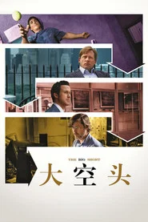
大空头 王牌播音员
王牌播音员 二流警探
二流警探 副总统
副总统
 盗梦空间
盗梦空间 泰坦尼克号
泰坦尼克号 华尔街之狼
华尔街之狼 禁闭岛
禁闭岛 饥饿游戏
饥饿游戏 饥饿游戏2：星火燎原
饥饿游戏2：星火燎原 饥饿游戏3：嘲笑鸟（上）
饥饿游戏3：嘲笑鸟（上） 太空旅客
太空旅客 穿普拉达的女王
穿普拉达的女王 华盛顿邮报
华盛顿邮报 妈妈咪呀
妈妈咪呀 了不起的狐狸爸爸
了不起的狐狸爸爸短评（轻微剧透）
轻微剧透：全片最荒诞的一场戏不是彗星撞地球，是那艘采矿飞船飞到一半自己掉头——理由不是技术故障，是「矿不值这个价」。轻微剧透：结局被安排成一桌最后的晚餐：明迪一家和凯特坐在桌边等死，而屏幕外的我们早就知道他们要等多久。这不是一部让人舒服的喜剧，它把「知道真相却什么都不会发生」拍成了类型片。看完之后，你每次在信息流里刷到热点，都会想起那档把末日做成表情包的晨间节目。
为什么值得一看
想看「讽刺喜剧能拍得多不留情面」的人；能接受全员丑角、没有英雄、以及它本质上是一部「我们怎么亲手搞砸自己」的电影的观众。内地未映，Netflix 可看。看完想继续：《大空头》（往期第 34 期，同导演）、《副总统》（同导演）、《天地大冲撞》与《世界末日》（1998 年两部彗星片，另一种拍法）。
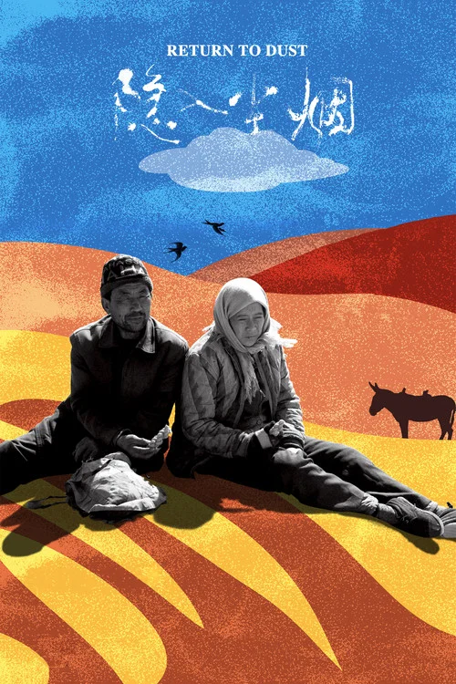
隐入尘烟 Return to Dust
「「被剩下的人，也可以把日子过成日子。」」
剧情梗概
甘肃高台，两个被各自家庭当成累赘的人被撮合到了一起：马有铁是村里最穷的光棍，寄居在三哥家，给侄子拉过嫁妆；曹贵英跛脚、尿失禁、不能生育，被哥嫂打发去了媒人说的「那个人家」。两人搬进村里弃置的土屋，从赊账买麦种开始：种地、孵鸡、盖土坯房、收麦子，一驴一车一四季。有铁两次被拉去给承包了村里土地的张永福献血，全村的地租因此续上；贵英心疼，却说不上话。秋天，贵英揣着馍馍和鸡蛋去给有铁送饭，在渠沟边头晕，栽进了河里。有铁还清所有账，放走驴子，在床头躺下。影片最后一行字幕说：2011 年冬，老马在政府和热心村民的帮助下乔迁新居。
亮点
- 李睿珺执导，入围第 72 届柏林电影节主竞赛单元（金狮奖提名），并拿下瓦拉多利德国际电影节金穗奖。
- 除海清之外，全片主要角色几乎都是导演的亲戚和当地农民——男主角武仁林是导演的姨父，一个地道的甘肃农民。
- 海清为演贵英在甘肃农村住了几个月，学张掖方言、干农活、练跛脚走路——成片里完全看不出她是《小欢喜》里那个上海妈妈。
- 影片按真实农时跨四季拍摄：赊账买种、孵鸡、盖房、收割，全片几乎没有「苦情戏」的表演痕迹，情绪全部长在农活里。
- 内地票房逆袭：首日不足 35 万元、排片占比 2.3%，上线流媒体后被短视频二创带飞，第 59 天单日票房超过 1400 万元，最终 1.1 亿元——中国文艺片市场天花板级的案例。
- 豆瓣从开分 7.8 一路涨到 8.5（现 8.4）；公映约三个月后从各流媒体平台下架，至今没有公开说明——这本身也成了中国电影史上被反复引用的一页。
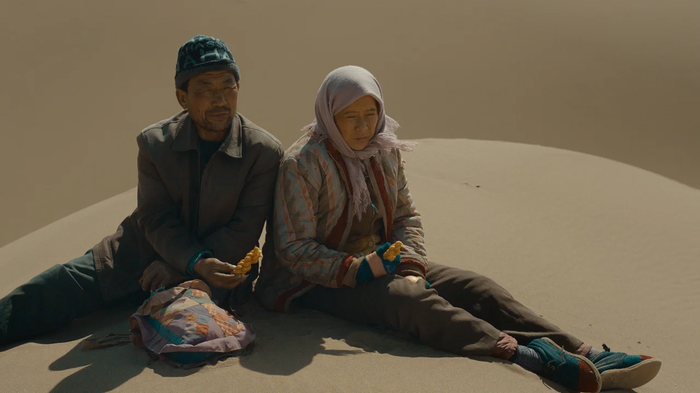
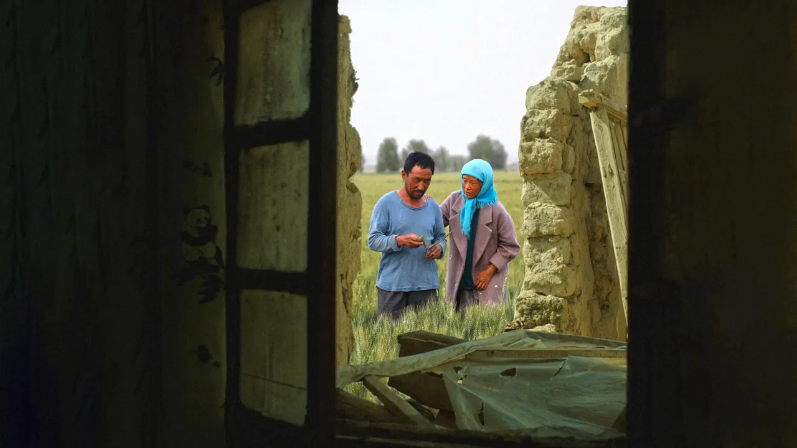
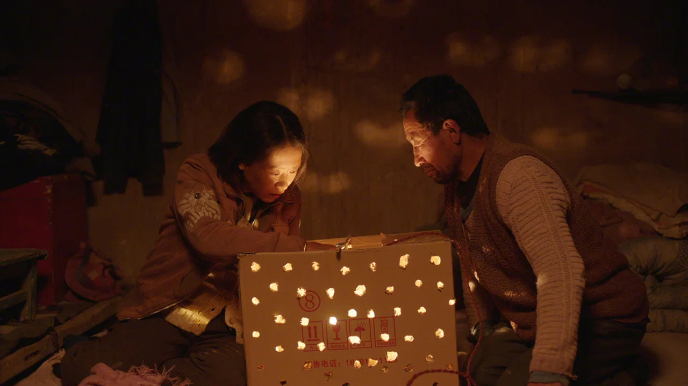
导演与主创 · 他们的历史作品
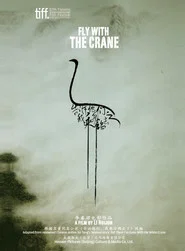
告诉他们，我乘白鹤去了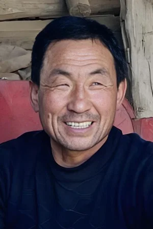
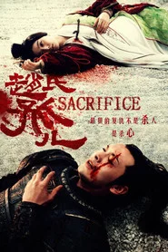
赵氏孤儿短评（轻微剧透）
轻微剧透：全片最疼的一个镜头，是有铁还完账回到屋里，看到贵英给他编的草驴还放在桌上。轻微剧透：影片没有拍他喝药，只拍他躺下、手垂下去、桌上多了一个农药瓶——而最后一行字幕用「乔迁新居」给这一切盖了章。这不是一部苦情片，它甚至不肯给观众一个可以哭的高潮；它的力量全部来自两个人把日子一天一天过回去的过程。看完你会明白，为什么那么多人说「这不是爱情片，是生活片」。
为什么值得一看
想看「剧情片能拍得多安静、多狠」的人；能接受方言对白、几乎没有戏剧转折、以及它本质上是一部关于「尊严」的电影的观众。内地已映，公映后曾上线流媒体又下架，目前国内难有正版渠道，海外有影碟与数字版渠道可看。看完想继续：《告诉他们，我乘白鹤去了》《家在水草丰茂的地方》（同导演）、《路过未来》（同导演，另一部县城叙事）。
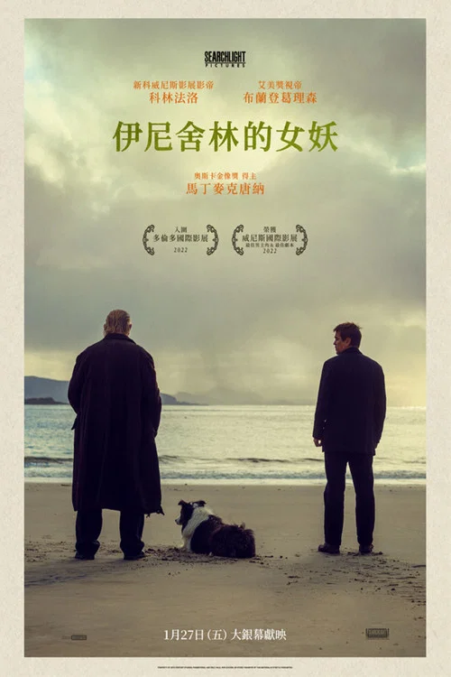
伊尼舍林的报丧女妖 The Banshees of Inisherin
「「我只是忽然不想再跟你说话了。」——友谊的死讯，比任何谋杀都难懂。」」
剧情梗概
1923 年，爱尔兰内战打到尾声，伊尼舍林岛的日子照旧。一天午后，音乐家科尔姆走进常去的酒吧，宣布从今天起不再和邻居帕德里克说话——「我只是想把剩下的时间用在作曲上，不想再听你讲两个小时的废话」。帕德里克不肯接受，一次次去堵他；科尔姆的价码越加越高：再来纠缠一次，他就剪掉自己一根手指。帕德里克的妹妹西沃恩看不下去了，少年多米尼克想帮忙却总是帮倒忙，而海对岸的炮声，正在为这场「友谊谋杀」伴奏。
亮点
- 马丁·麦克唐纳自编自导——片名呼应他 1996 年的名剧《丽南巴恩的女妖》，是他从剧场到电影的一以贯之；本片也是他继《三块广告牌》之后时隔五年的新作。
- 第 79 届威尼斯电影节：科林·法瑞尔拿下沃尔皮杯最佳男演员，麦克唐纳拿下最佳编剧，首映 15 分钟起立鼓掌，是那年电影节最长的一次。
- 第 95 届奥斯卡九项提名（最佳影片、导演、男主角、两个男配角、女配角、原创剧本、剪辑、配乐），最终零获奖——那一届最大的遗珠。
- 科林·法瑞尔与布莱丹·格里森继《在布鲁日》之后再次搭档，一对把「爱尔兰男人的沉默」演成喜剧与悲剧的活化石。
- 巴里·基奥恩演的多米尼克戏份不多，却凭此片拿到奥斯卡最佳男配提名；那只叫珍妮的驴子，是当年红遍社交媒体的「动物影星」。
- 影片把 1923 年爱尔兰内战放进了背景音：海对岸的炮声与岛上的绝交信，构成全片最冷的历史互文。
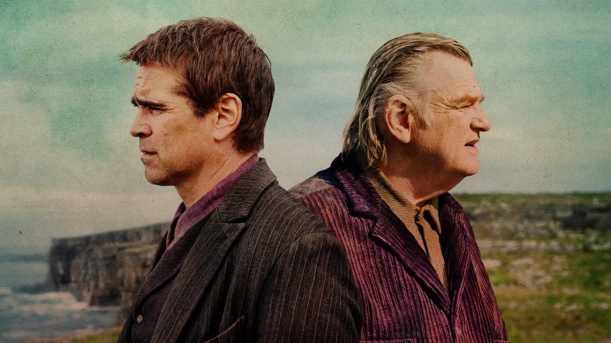
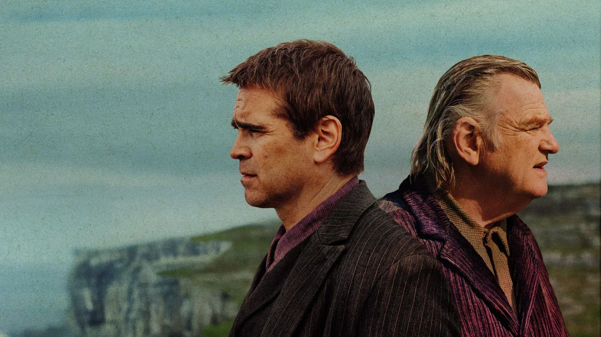
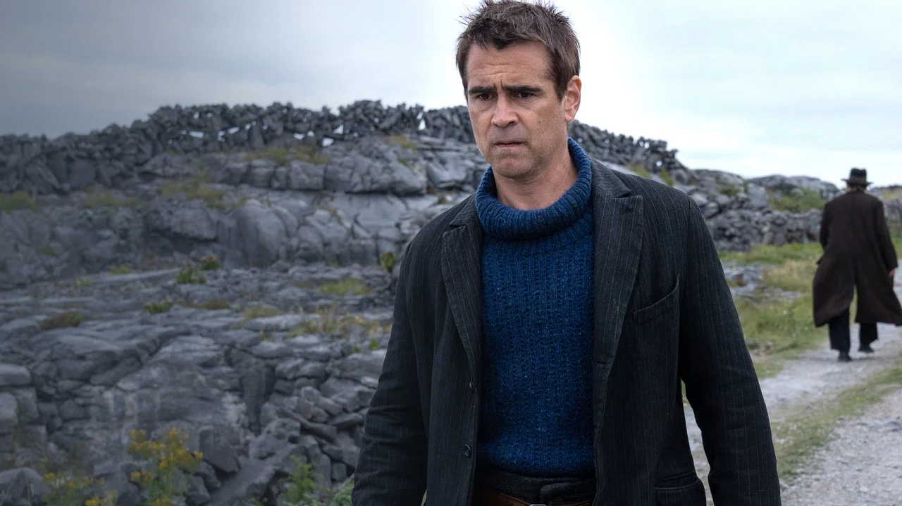
导演与主创 · 他们的历史作品

 三块广告牌
三块广告牌 杀手没有假期
杀手没有假期 七个神经病
七个神经病 六发子弹的手枪
六发子弹的手枪
 龙虾
龙虾 全面回忆杀手没有假期
全面回忆杀手没有假期 少数派报告
少数派报告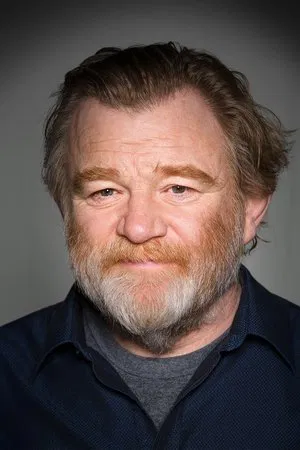
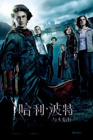
哈利·波特与火焰杯 明日边缘杀手没有假期
明日边缘杀手没有假期 惊变28天
惊变28天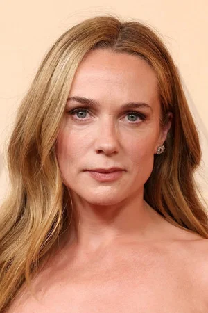
 F1：狂飙飞车三块广告牌
F1：狂飙飞车三块广告牌 复仇者联盟3：无限战争
复仇者联盟3：无限战争短评（轻微剧透）
轻微剧透：全片最冷的一场戏，是科尔姆把剪下来的手指一根根放在桌上，而帕德里克还在问他「你这是何必」。轻微剧透：影片的结尾停在帕德里克站在海边，驴子留在屋里——内战结束了，友谊没有。麦克唐纳最狠的地方，是让这两个男人从头到尾都没有坏人：科尔姆只是不想再浪费时间，帕德里克只是不肯被丢下。我们笑的每一次，都在为这两个人的孤独买单。看完你会给最好的朋友发一条消息，然后什么都说不出来。
为什么值得一看
想看「喜剧能把友谊的死亡拍得多郑重」的人；能接受冷幽默、荒诞升级、以及它本质上是一部关于「男性如何不会表达」的电影的观众。内地未映，流媒体与蓝光可看。看完想继续：《在布鲁日》（同导演、同双男主）、《七个神经病》（同导演）、《三块广告牌》（往期第 18 期，同导演）。
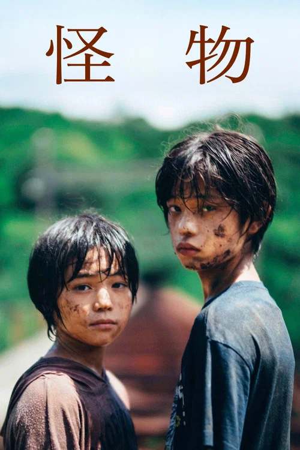
怪物 Monster
「「谁是怪物？」——一桩校园冲突的三个版本，没有一个版本肯轻易放过你。」」
剧情梗概
单亲妈妈早织发现儿子凑最近行为异常：突然剪了头发、丢了球鞋、半夜出门、说「我的心被猪换走了」。她冲到学校，一口咬定老师保利虐待了儿子；保利反过来指出，是凑在霸凌一个家境复杂的同学依里。双方各不相让，事件越闹越大，媒体、家长、校长全被卷进来，保利违心认错、背下骂名，早织也被指「过度保护」。而在一个暴风雨的清晨，凑和依里一起失踪了——当影片第二次、第三次回到同一个下午，观众才慢慢看清「怪物」两个字到底该写给谁。
亮点
- 是枝裕和执导，编剧是坂元裕二（《花束般的恋爱》《四重奏》）；配乐来自坂本龙一——这是他去世前最后完成的作品之一。
- 第 76 届戛纳电影节主竞赛：金棕榈提名，拿下最佳编剧与酷儿棕榈奖；2024 年亚洲电影大奖最佳导演。
- 全片三段结构：同一个下午，从妈妈、老师、孩子三个视角各讲一遍——真相每翻一层，上一层的「真相」就被推翻一次。
- 两个小演员（黑川想矢、柊木阳太）贡献了近年儿童表演里最克制的一对：他们不是在演男孩，是在忍住。
- 安藤樱与永山瑛太的几场对峙戏，把「成年人的自以为是」拍成了恐怖片——观众以为自己看懂了，其实没有。
- 影片在日本也引发了「酷儿叙事如何被营销隐藏」的讨论——是枝裕和本人在《朝日新闻》的对话中回应：他把结尾拍成两个选择活下来的孩子。
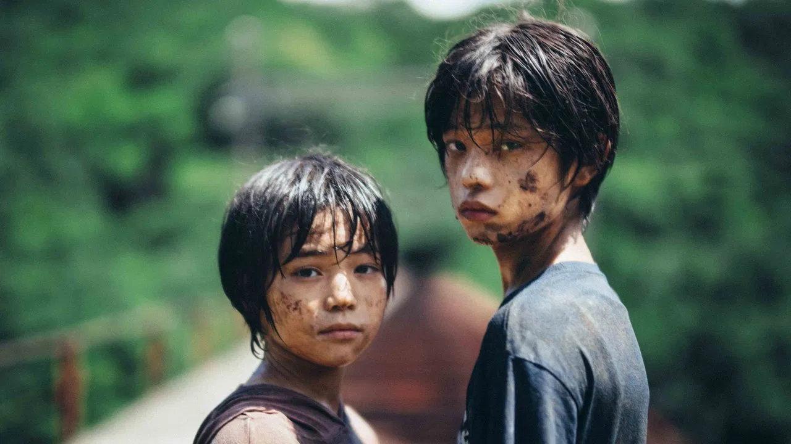
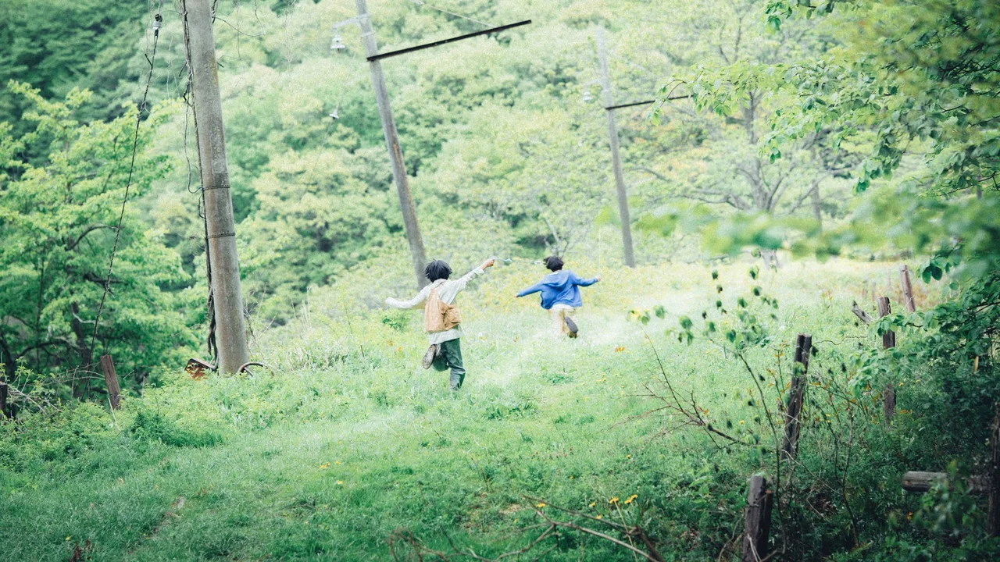
导演与主创 · 他们的历史作品

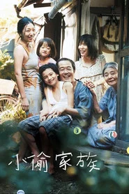
小偷家族 如父如子
如父如子 无人知晓
无人知晓 海街日记
海街日记
 哥斯拉-1.0
哥斯拉-1.0 爱的曝光
爱的曝光 百元之恋
百元之恋 被嫌弃的松子的一生
被嫌弃的松子的一生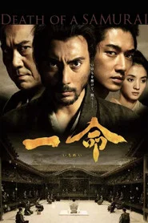
一命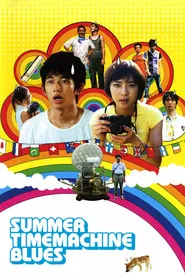
夏日时光机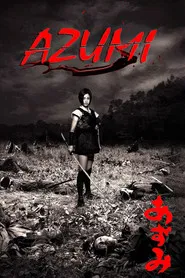
少女杀手阿墨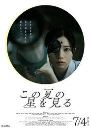
仰望今夏的星空短评（轻微剧透）
轻微剧透：全片最狠的一笔，是第二遍重看时你会发现：第一遍里那个「明显在虐待学生的老师」，在第二遍里只是一个被错误吞掉的人。轻微剧透：结尾两个孩子在风暴里跑进一截废弃车厢，把「怪物」两个字留给了所有大人。这不是一部关于校园欺凌的电影，是一部关于「每个人如何用自己的真相伤害别人」的电影。三段结构看完，你会怀疑自己第一段时的全部判断。
为什么值得一看
想看「悬疑片能把叙事玩得多诚实」的人；能接受多视角结构、没有反派、以及它本质上是一部关于「理解之难」的电影的观众。分级 PG-13，可放心观看；内地未映，流媒体可看。看完想继续：《小偷家族》（往期第 30 期，同导演）、《无人知晓》《如父如子》（同导演）、《花束般的恋爱》（同编剧）。
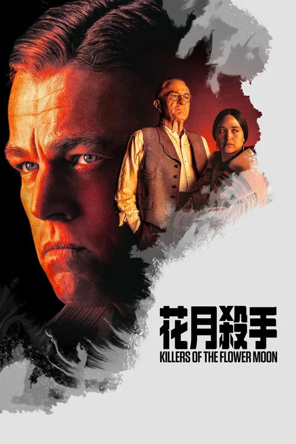
花月杀手 Killers of the Flower Moon
「「石油改变了这里的一切，然后杀死了这里的人。」」
剧情梗概
1920 年代，俄克拉何马。奥塞奇族人因为土地下突然冒出来的石油成了「人均最富」的族群，也成了猎捕者的目标：谋杀、诈骗、「监护婚姻」一层层压下来，死亡名单越列越长。从一战退伍的欧内斯特·伯克哈特投奔舅舅威廉·黑尔——当地呼风唤雨的牧场主，随即娶了奥塞奇女子莫莉。黑尔要的是莫莉家族的头产权，欧内斯特要的是舅舅的钱，而联邦调查局派来的怀特探长，正在把这些「意外死亡」一桩一桩翻出来。影片最后把时间交给莫莉，交给一个族群的丧失，也交给美国「现代执法体系」不怎么光彩的开端。
亮点
- 马丁·斯科塞斯执导，改编自大卫·格兰的非虚构名作《花月杀手》——20 世纪 20 年代奥塞奇族连环谋杀案。
- 莱昂纳多·迪卡普里奥与罗伯特·德尼罗，继《赌城风云》（1995）之后时隔近三十年，再次在同一部斯科塞斯电影里演对手戏。
- 莉莉·格莱斯顿凭莫莉成为奥斯卡历史上第一位入围最佳女主角的原住民女性，并拿下金球奖剧情类影后。
- 第 96 届奥斯卡十项提名（影片、导演、女主、男配、剧本、摄影、剪辑、配乐、艺术指导、服装），最终零获奖——与《伊尼舍林的报丧女妖》并列那一届的「遗珠双璧」。
- 影片因 206 分钟的片长引发讨论，斯科塞斯与御用剪辑塞尔玛·斯昆梅克多次公开为片长辩护：这不是一部长电影，是一部完整的电影。
- 配乐由罗比·罗伯森完成——斯科塞斯四十多年的老搭档，这是他最后的电影配乐，也为他拿到奥斯卡提名。
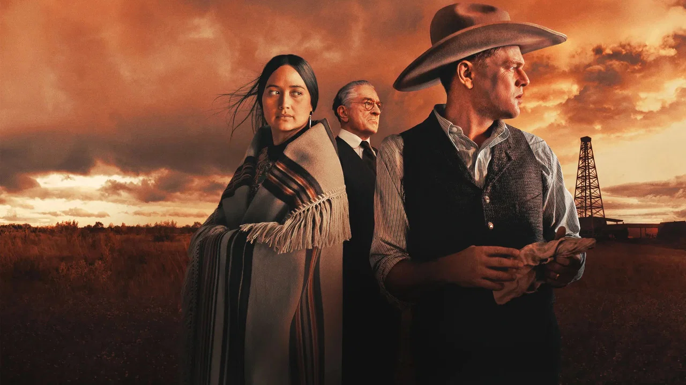
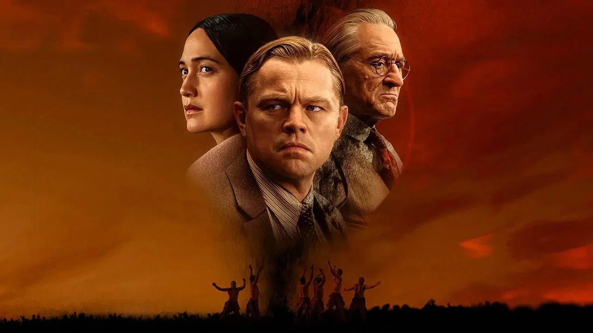
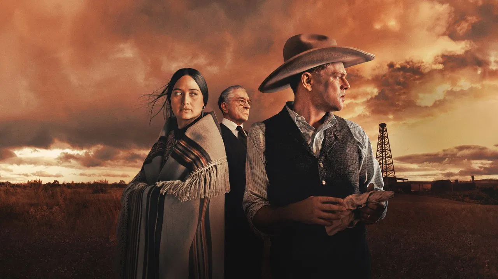
导演与主创 · 他们的历史作品
 华尔街之狼禁闭岛
华尔街之狼禁闭岛 无间道风云
无间道风云 好家伙
盗梦空间泰坦尼克号华尔街之狼禁闭岛
好家伙
盗梦空间泰坦尼克号华尔街之狼禁闭岛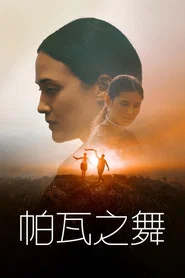
Fancy Dance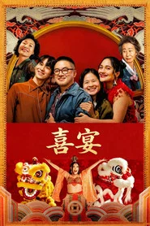
喜宴 好家伙
好家伙 小丑
小丑 出租车司机
出租车司机 爱尔兰人
爱尔兰人短评（轻微剧透）
轻微剧透：全片最让人坐不住的一场戏，是莫莉一次次问「我家里的人怎么了」，而镜头始终不肯给她一个答案。轻微剧透：影片没有把联邦调查局拍成救世主——他们的登场反而带上一层反讽：一个族群的血流干了，「现代执法」才登场。斯科塞斯拍的是一杯石油的距离如何改变一个民族的命运。206 分钟很长，但它的长度本身就是论点：有些事必须被讲完，不能被打包成「看点」。
为什么值得一看
想看「史诗片能把殖民与资本的账算得多细」的人；能接受漫长节奏、大量白描对白、以及它本质上是一部关于「贪婪如何变成制度」的电影的观众。内地未映，Apple TV+ 流媒体可看，2026 年起有 CC 版影碟。看完想继续：《花月杀手》原著（大卫·格兰）、《爱尔兰人》《好家伙》（同导演）、《聚焦》（往期第 25 期，同为一桩被制度掩埋的真实罪案）。
河边的错误 Only the River Flows
「「凶手抓到了，故事才刚刚开始。」——马哲在河边丢掉的不只是理智。」」
剧情梗概
1995 年，江南小镇沛水县。刑警队长马哲接手一桩河边凶案：养鹅的幺四婆婆死在河边，现场留下一盘磁带和一个男孩的证词。嫌疑人一个个浮出水面——有家室的诗人王宏、异装裁缝许亮、被婆婆收留的「疯子」——又一个个死去或失控。局里催着结案申报，马哲却在证词里发现了越来越多的窟窿；他记不起自己在云南立过的三等功，而电影院改成的刑警队办公室里，投影仪把案情一段段放给他看。真相在河水的反光里越来越远，马哲自己的精神状态，成了这桩案子最后一个说不清的现场。
亮点
- 改编自余华 1988 年首发于《钟山》的同名中篇——先锋文学里最「不好改」的文本之一，被魏书钧拍成了一部 102 分钟的犯罪剧情片。
- 入围第 76 届戛纳电影节「一种关注」单元，并在平遥国际电影展拿下最佳影片与迷影选择荣誉奖。
- 朱一龙凭马哲拿下 2025 年金熊猫奖电影单元最佳男主角——他把一个基层刑警的疲惫与偏执，演得让人分不清是入戏还是入魔。
- 摄影程马后来凭本片拿到长春电影节金鹿奖最佳摄影，胶片质感把 1995 年的江南拍成了一卷受潮的录像带。
- 内地票房约 3.09 亿元——国产艺术片「破圈」的标本级案例：靠罪案框架降低门槛，靠短视频与二创完成传播。
- 结局没有给「真相」一个交代，而是把答案交给了马哲的孩子——这个处理让它在豆瓣常年被争论，7.2 分是近几年艺术片里最分裂的一档。
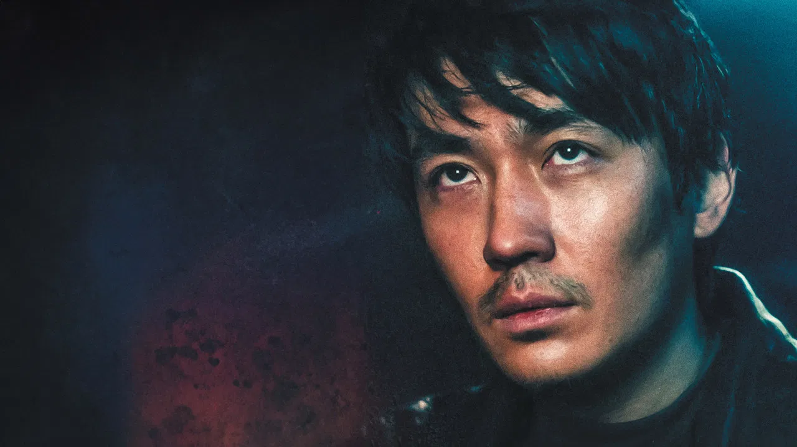
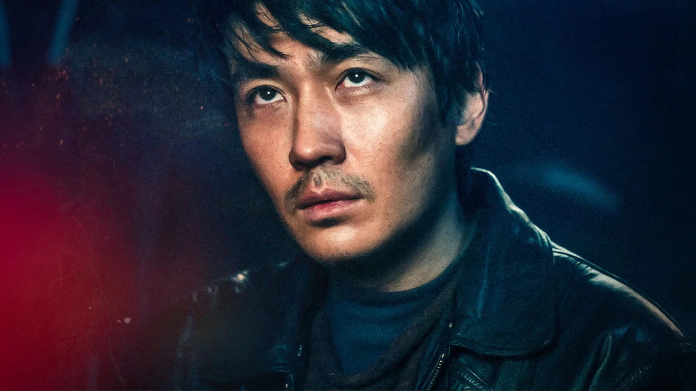
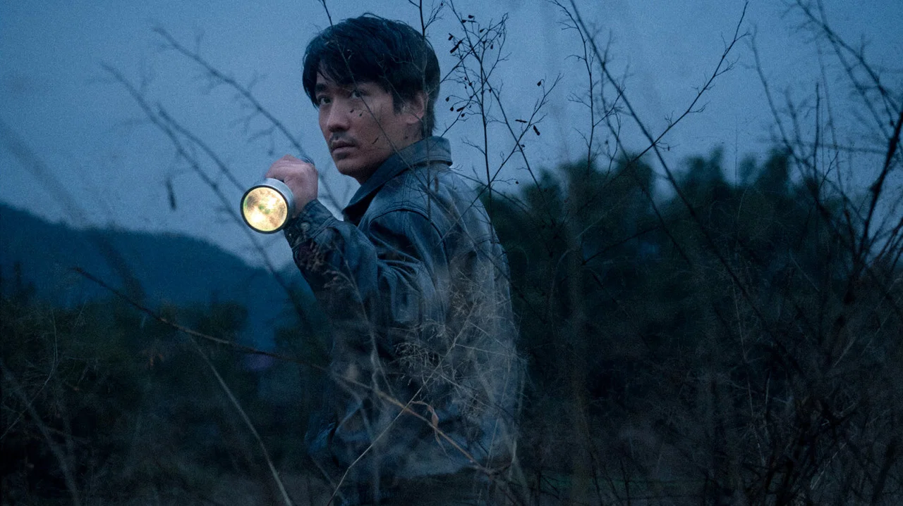
导演与主创 · 他们的历史作品
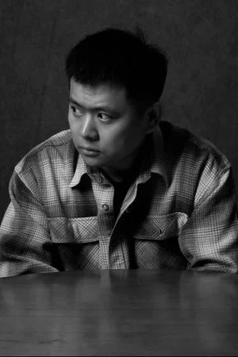
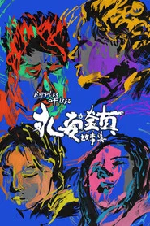
永安镇故事集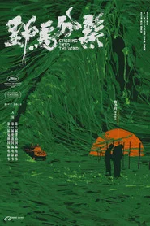
野马分鬃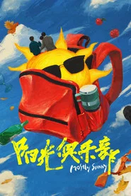
阳光俱乐部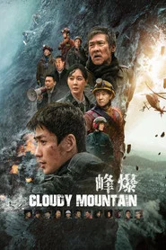
峰爆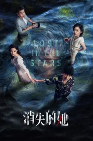
消失的她 东极岛
东极岛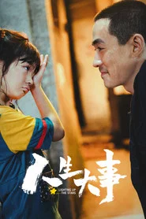
人生大事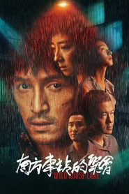
南方车站的聚会 地球最后的夜晚
地球最后的夜晚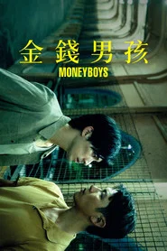
金钱男孩短评（轻微剧透）
轻微剧透：全片最不对劲的一场戏，是马哲在电影院里放着幻灯，忽然和死去的人对视。轻微剧透：结尾他在河边「抓到」了疯子，也拿到了三等功——可孩子出生那场戏，把这一切都变成了问号。魏书钧没有拍「真相」，他拍的是一个人如何被真相磨成粉末；观众以为自己在看侦探片，其实在看一部关于「世界上有些事没有答案」的片。看完你会反复回想那个孩子的脸——那是全片唯一一个从头到尾都清醒的人。
为什么值得一看
想看「悬疑片能把类型与作者性缝得多紧」的人；能接受荒诞结局、开放式答案、以及它本质上是一部关于「现实感如何崩塌」的电影的观众。内地已映，优酷、爱奇艺可看。看完想继续：《河边的错误》原著（余华）、《野马分鬃》《永安镇故事集》（同导演）、《消失的她》（同主演，把「执念」拍成了另一种悬疑）。
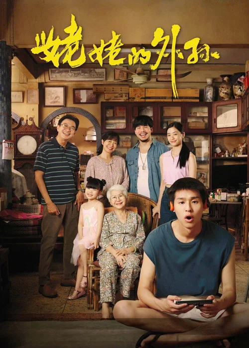
姥姥的外孙 How to Make Millions Before Grandma Dies
「「儿子继承遗产，女儿继承癌症。」——一句冰箱前的家常话，装下了整个东亚家庭。」」
剧情梗概
出身泰国华人家庭的无业青年阿安，看到堂妹因为照顾病重的爷爷继承了房产，于是把同样的算盘打到了姥姥身上：姥姥确诊了癌症，他退掉工作、搬去姥姥的粥摊边当「全职孝孙」，目标是那间老屋的继承权。可竞争不止他一个：大舅带着礼物回来，小舅哭穷，而真正天天陪诊、收拾剩菜的，却总是妈妈。阿安一边和舅舅们斗法，一边在姥姥的门前守望、陪她卖粥、听她讲过去——那颗原本冲着遗产去的心，被一个老人最后的时光一天天焐热。而姥姥心里早有一本账：房子留给最不成器的小儿子，陪伴留给了一直在付出的女儿。
亮点
- 豆瓣 8.8，豆瓣评分最高的泰国电影；烂番茄 98%——一部家庭伦理片拿到了恐怖片级别的口碑。
- 泰国 2024 年票房冠军（3.37 亿泰铢），全球票房超过 10 亿泰铢；内地 2024-08-23 上映，最终约 1.27 亿元，是那年暑期档最大的口碑黑马。
- 代表泰国角逐第 97 届奥斯卡最佳国际影片并进入 15 部短名单——第一部做到这件事的泰国电影；2025 年泰国电影金天鹅奖上拿下包括最佳影片与最佳女演员在内的 9 项大奖。
- 导演帕特·波尼蒂帕特刻意不用配乐煽情：全片的情绪靠潮汕话、童谣和粥摊的蒸汽完成。
- 姥姥的扮演者乌萨·萨梅坎姆是素人演员，导演试遍大量非职业演员后选了她——她凭此片拿到金天鹅奖最佳女演员。
- 影片把「遗产」拍成了一场家庭社会学田野调查：空巢、临终关怀、照护劳动、女性在家庭里的无偿付出，全部装进一部没有反派的电影。
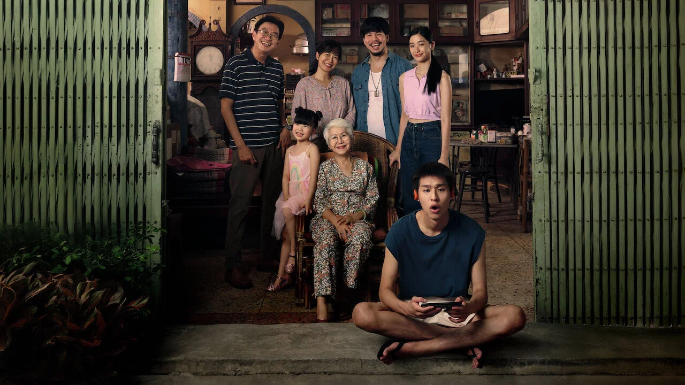
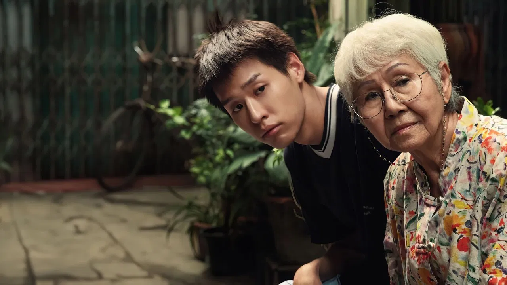
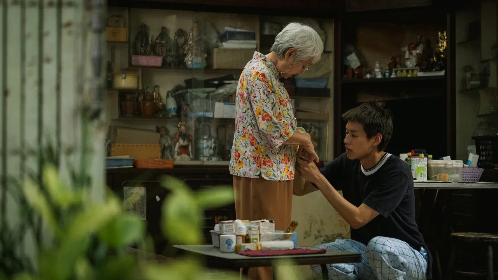
导演与主创 · 他们的历史作品
 海啸奇迹
海啸奇迹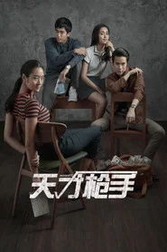
天才枪手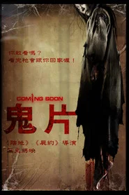
厉鬼将映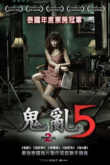
鬼乱5短评（轻微剧透）
轻微剧透：全片最狠的一场戏在冰箱前：姥姥提醒女儿别总吃过期食物，担心她也得癌症——一句话把「谁在这个家里一直被消耗」说完了。轻微剧透：房子最后还是给了最不成器的小儿子，而阿安问姥姥「为什么爱错人」，姥姥没有辩解。这部电影没有反派，甚至没有一个「觉醒」的时刻；它的温柔与锋利来自同一样东西——它让观众在自己的家庭里认出了每一个角色。准备好纸巾，但它不靠煽情赢你。
为什么值得一看
想看「家庭片能拍得多不滥情」的人；建议和父母一起看，或者独自看完再给他们打个电话。内地已映，流媒体可看。看完想继续：《天才枪手》（同厂牌 GDH 的另一部神作）、《姥姥的外孙》的潮汕话片段（官方发布过）、《步履不停》（是枝裕和，同一片土壤长出的另一种家庭叙事）。
阿诺拉 Anora
「「拉斯维加斯一夜之后，童话开始按账单结算。」」
剧情梗概
布鲁克林布莱顿海滩，性工作者阿尼在俱乐部遇到了俄罗斯寡头的儿子伊万，两人一通狂躁的拉斯维加斯闪婚，换了驾照也换了「阶层」。消息传回俄罗斯，伊万的父母飞到纽约，要让这桩婚姻作废之前先算账：管家带着人马封了阿尼的住处，递上一笔「遣散费」。阿尼不肯，满城找人、闯豪宅、对着镜头咆哮，而全程真正陪着她的，是寡头家那个沉默的俄罗斯跟班伊戈尔。一场以亿美元为单位的离婚谈判，最后回到两个一无所有的人之间。
亮点
- 第 77 届戛纳电影节金棕榈奖；第 97 届奥斯卡最佳影片、最佳导演、最佳女主角、最佳原创剧本、最佳剪辑五项大奖。
- 肖恩·贝克用约 600 万美元预算拍完，全球票房约 5930 万美元——回报率接近十倍，是 2024 年性价比最高的「申奥片」。
- 影片在布莱顿海滩以游击式实景拍摄，大量启用非职业演员与真实街景——与《橘色》《佛罗里达乐园》一脉相承。
- 开画票房纪录：首周末 6 家影院进账 55 万美元，单馆 91751 美元，是 2024 年最好的开画之一。
- 麦琪·麦迪森从《惊声尖叫5》里的配角一路演到奥斯卡影后；尤拉·鲍里索夫凭伊戈尔拿到最佳男配提名，这是他第一部英语片。
- 口碑落差极大：烂番茄 93% / Metacritic 91，豆瓣只有 6.3——本期「东西方评分差」最大的一部，中文观众多嫌它吵、糙、不讨喜。
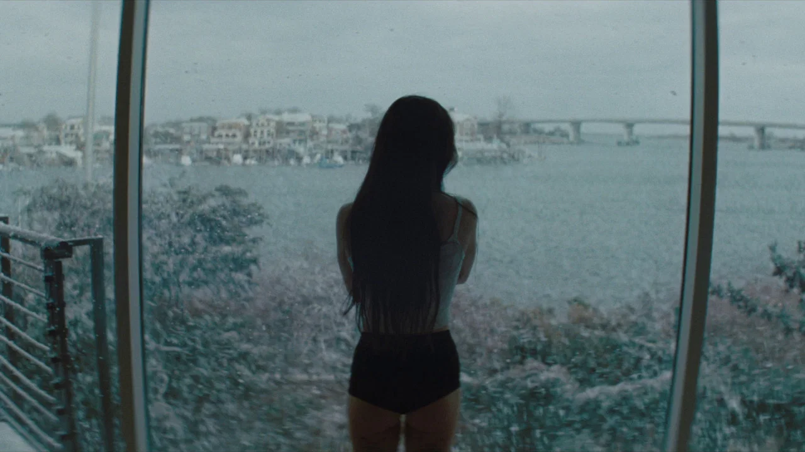
导演与主创 · 他们的历史作品
 惊声尖叫5
惊声尖叫5 好莱坞往事
好莱坞往事短评（轻微剧透）
轻微剧透：全片最好也最冷的一场戏，是阿尼和伊万在市政厅排队结婚时，旁边的人正在为一张合影收费。轻微剧透：影片最后停在一个「没有人被拯救」的拥抱里——伊戈尔跪下来抱住崩溃的阿尼，而这场以亿美元为单位的战争，最后只剩两个坐在地板上的人。贝克没有把阿尼写成受害者，也没有把她写成英雄：她只是一个把童话当真、然后被账单教育的人。这是 2024 年最吵也最诚实的电影。
为什么值得一看
想看 「爱情片能拍得多不像爱情片」的人；能接受大量吼叫戏、粗口直给、以及它本质上是一部关于「阶级如何定价感情」的电影的观众。R 级，建议成年观看。内地未映，流媒体与 CC 版蓝光可看。看完想继续：《佛罗里达乐园》《橘色》（同导演）、《红色火箭》（同导演）。
真正的痛苦 A Real Pain
「「我们不是来旅游的，我们是来难受的。」——一堂关于创伤、阶级与身份的 90 分钟公开课。」」
剧情梗概
大卫和班吉是一对多年不和的堂兄弟，奶奶多莉去世后留下钱，让他们去波兰走一趟「根源之旅」。大卫是纽约的乖乖牌，有妻有子，说话留三分；班吉语速快、脾气直、情绪像没装刹车的卡车，刚下飞机就把导游詹姆斯逼到墙角。行程从华沙的犹太区走到集中营、走到奶奶长大的小镇，白天是墓碑与铁轨，晚上是两瓶伏特加和不肯松口的旧怨。班吉一次次把气氛推到失控，又一次次在最不该软下来的地方软下来——直到那通电话，大卫才第一次听懂弟弟这些年到底在扛什么。
亮点
- 杰西·艾森伯格自编自导自演的第二部长片——从《社交网络》里的扎克伯格走到圣丹斯，他走了十四年。
- 第 40 届圣丹斯电影节沃尔多·索尔特编剧奖；第 97 届奥斯卡最佳原创剧本提名，基兰·卡尔金拿下最佳男配角。
- 卡尔金同时拿下 BAFTA 最佳男配与金球奖最佳男配——一个从《小鬼当家》里的小屁孩演到《继承之战》的罗伊，终于拿到了自己的奥斯卡。
- 影片体量极小——90 分钟、两个演员、一趟波兰大巴，全球票房约 1960 万美元，小成本电影的极限性价比。
- 探照灯影业发行，艾玛·斯通的 Fruit Tree 出任制片人——她与艾森伯格的合作从《僵尸之地》延续到了这里。
- 它没有把大屠杀当成背景板：「谁有资格为一份自己没有亲历的创伤难受」，是这部喜剧最疼的暗线。
导演与主创 · 他们的历史作品

 惊天魔盗团
惊天魔盗团 社交网络
社交网络 丧尸乐园
丧尸乐园 惊天魔盗团2
惊天魔盗团2 歪小子斯科特对抗全世界
歪小子斯科特对抗全世界 艾曼纽
艾曼纽 房子
房子短评（轻微剧透）
轻微剧透：全片最重的一场戏在墓园的台阶上：班吉终于安静下来，而大卫发现自己「什么感觉都没有」。轻微剧透：结尾落在两处——机场里班吉追上来抱住大卫；以及回家之后，大卫在自己那张一切正常的餐桌前突然哭到停不下来。这部电影最狠的设定是全程没有坏人：班吉不是「问题」，大卫的「正常」也不是「答案」。90 分钟很短，后劲很长——它会让你想起自己家里那个「不太联系但一直惦记」的人。
为什么值得一看
想看「喜剧能把沉重处理得多轻」的人；能接受公路片结构、大段对话、以及它本质上是一部关于「二代移民与创伤」的电影的观众。内地未映，Hulu 可看。看完想继续：《社交网络》（往期第 34 期，同主演）、《僵尸之地》（往期第 22 期，同主演）、《伊尼舍林的报丧女妖》（本期第 3 部，另一种「两个男人」）。
粗野派 The Brutalist
「「他们让我成了他们。」——一座混凝土建筑，一个美国梦，和一份不能拒绝的合同。」」
剧情梗概
1947 年，一艘远洋轮船靠岸。匈牙利犹太建筑师拉斯洛·托特——大屠杀幸存者，断掉的鼻梁、戒不掉的海洛因和一身包豪斯的理想——踏上费城，投奔经营家具店的表兄，睡在储藏间，靠街角接济站过活。他的图纸被人当成「儿童自行车」，直到宾夕法尼亚的实业家范布伦找上门：为他的「母亲」建一座社区中心，条件是建筑师从此归他所有。一桩交易把拉斯洛从废墟里捞出来，也把他一点点关进资本的牢笼：他被迫用海洛因止痛、在范布伦的宴席上陪笑，而远在东欧难民营的妻子埃尔兹贝特，正拖着瘫痪的双腿向他走来。影片分四幕，中间有 15 分钟幕间——像一栋粗野主义建筑那样庞大、沉重、不加修饰。
亮点
- 第 81 届威尼斯电影节银狮奖最佳导演（另获费比西奖等，共五项）；第 97 届奥斯卡十项提名，拿下最佳男主角、最佳摄影、最佳原创配乐。
- 阿德里安·布罗迪继《钢琴家》之后第二次拿到奥斯卡影帝——同一张「被历史碾过的脸」，隔了二十三年。
- 片长 215 分钟，中间有真正的 15 分钟幕间休息——它拒绝被剪成「可观看的时长」，坚持用建筑的体量压向观众。
- 摄影指导洛尔·克劳利用 VistaVision 摄影机配 35mm 胶片，质感直接致敬《迷魂记》；配乐家丹尼尔·布隆伯格拿下奥斯卡。
- 影片在匈牙利布达佩斯拍摄，美术指导朱迪·贝克为「范布伦社区中心」搭出了整座粗野主义建筑的内景。
- 2024 年口碑最分裂的「史诗」之一：烂番茄 93% / Metacritic 90，豆瓣 7.2——有人看到美国梦的讣告，有人看到一位导演的失控；片方用 AI 修正匈牙利语发音的操作，当年也引发过一场关于「表演真实性」的争论。
导演与主创 · 他们的历史作品
 神弃之地
神弃之地 钢琴家
钢琴家 新铁血战士
新铁血战士 金刚
金刚 布达佩斯大饭店
布达佩斯大饭店 万物理论
万物理论 但丁密码
但丁密码 超凡蜘蛛侠2
超凡蜘蛛侠2
 记忆碎片
记忆碎片 钢铁侠3
钢铁侠3 普罗米修斯
普罗米修斯 时间机器
时间机器短评（轻微剧透）
轻微剧透：全片最冷的一场戏，是范布伦在宴会上谈起「我拥有你」时的那种理所当然。轻微剧透：影片的尾声跳到 1980 年的威尼斯建筑双年展——年迈的拉斯洛看到自己的作品终于被当成「作品」展出，而范布伦的帝国已经塌了。215 分钟不是炫技，是这部片的论点本身：它要求你像住进一栋建筑一样住进这个故事。看完你会明白片名为什么叫「粗野派」——粗粝、巨大、拒绝讨好，也因此经得起时间。
为什么值得一看
想看 「史诗片能把美国梦拍得多冷」的人；能接受三小时半片长、沉重议题、以及它本质上是一部关于「才华如何被资本收编」的电影的观众。建议找一个不被打扰的夜晚，中途真的休息一次。内地未映，流媒体可看。看完想继续：《战前童年》《光之声》（同导演）、《钢琴家》（同主演，布罗迪的上一座奥斯卡）。